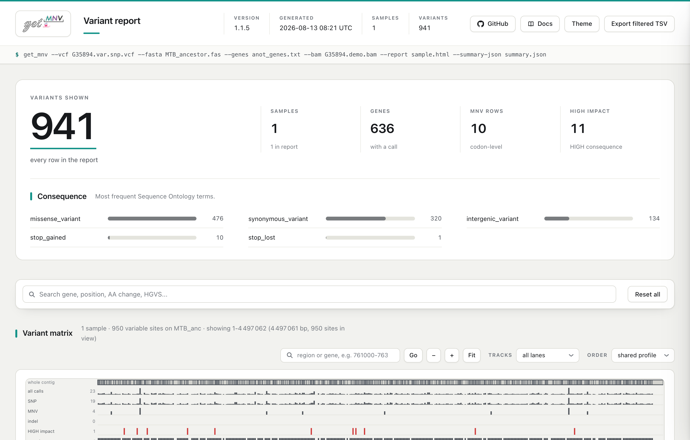
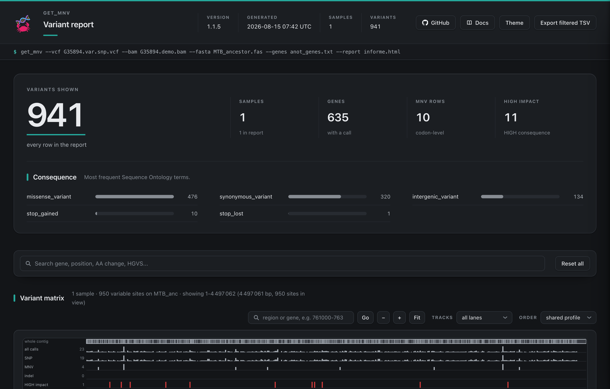

Empezar
Tutorial de línea de comandos
La línea de comandos es la interfaz principal de get_MNV: todo lo que la herramienta sabe hacer se alcanza desde ahí, y es lo que se mete en un pipeline. Este tutorial la ejecuta de principio a fin sobre el ejemplo de M. tuberculosis que viene incluido, y dedica casi todo su espacio a lo que de verdad importa: leer lo que devuelve.
Hay un Tutorial de la GUI que recorre lo mismo en la aplicación.
1. Consigue los datos de ejemplo
La carpeta example/ del repositorio trae todo lo necesario:
| Archivo | Papel |
|---|---|
MTB_ancestor.fas | Referencia (un único contig, MTB_anc) |
anot_genes.txt | Tabla de genes (nombre, inicio, fin, hebra) |
G35894.var.snp.vcf | Llamadas de variantes al estilo VarScan |
G35894.demo.bam | Subconjunto diminuto de lecturas alineadas |
git clone https://github.com/PathoGenOmics-Lab/get_MNV.git
cd get_MNV/example2. Anota las variantes
get_mnv \
--vcf G35894.var.snp.vcf \
--fasta MTB_ancestor.fas \
--genes anot_genes.txtget_MNV registra lo que ha decidido antes de registrar lo que ha encontrado. La ejecución imprime toda su configuración, y luego las líneas que importan:
[INFO get_mnv::pipeline] Using genetic code: Bacterial/Archaeal/Plant Plastid (NCBI table 11)
[INFO get_mnv::io::annotation::tsv] TSV gene entries parsed: 4008 | mapped to SNPs: 635 | without SNPs: 3373
[INFO get_mnv::pipeline::processing] Contig 'MTB_anc' -> 950 SNP/variant records in VCF, 635 mapped genes
[INFO get_mnv::pipeline::processing] Contig 'MTB_anc' -> 134 intergenic variant(s) added
[INFO get_mnv::pipeline] Summary 'MTB_anc' -> variants=941 (SNP=797, MNV=0, SNP/MNV=10, INDEL=0, intergenic=134)
[INFO get_mnv::pipeline] Processing complete. Output files generated successfully.Escribe G35894.var.snp.MNV.tsv en el directorio actual.
Lee la línea de resumen, siempre
950 registros se convierten en 941 variantes porque un codón que lleva dos sustituciones se reporta una sola vez. SNP/MNV=10 es el trabajo a nivel de codón: diez codones donde se combinan registros separados del VCF. MNV=0 significa que ningún registro traía ya más de una base sustituida.
intergenic=134 es tu comprobación de cordura sobre la anotación. get_MNV no puede distinguir una variante que está fuera de un gen de una variante cuyo gen no ha sabido encontrar, así que una anotación que no cuadra no falla: termina bien, reporta casi todo como intergénico e imprime Processing complete. Si esa cifra es la mayoría de tus variantes, tus coordenadas de genes no encajan con tu referencia.
Código genético
get_MNV usa por defecto la tabla de traducción 11 del NCBI (bacteriana), que es la correcta para M. tuberculosis. Usa --translation-table para otros organismos.
Con --dry-run obtienes el mismo resumen sin escribir nada, que es la forma barata de comprobar las entradas antes de una ejecución larga.
3. Lee la salida
Abre el TSV. Una fila destaca: el gen Rv2036 lleva dos SNV en el mismo codón.
| Columna | Valor |
|---|---|
Positions | 2282376, 2282377 |
Reference Bases / Base Changes | T, T → C, C |
Reference Codon | GTT |
SNP Codon | GCT, GTC |
MNV Codon | GCC |
AA Changes | Val93Ala |
SNP AA Changes | Val93Ala, Val93Val |
Variant Type | SNP/MNV |
SO Term / Impact | missense_variant / MODERATE |
HGVS g. | g.[2282376T>C;2282377T>C] |
Leídas base a base, las dos sustituciones se contradicen: GCT es Val93Ala y GTC es Val93Val, un cambio silencioso. Leídas juntas como GCC, el codón es una única sustitución Val→Ala. Esa reclasificación es para lo que existe get_MNV, y es invisible para un anotador por-SNV. Mira Formatos de salida para conocer cada columna.
4. Añade soporte de lecturas
La anotación dice lo que el codón significaría. No dice si alguna molécula lleva de verdad los dos cambios. Para eso hay que darle los alineamientos:
get_mnv \
--vcf G35894.var.snp.vcf \
--fasta MTB_ancestor.fas \
--genes anot_genes.txt \
--bam G35894.demo.bamLa fila de Rv2036 gana sus columnas de evidencia:
| Columna | Valor | Significado |
|---|---|---|
MNV Reads | 24 | lecturas que llevan el haplotipo entero |
MNV Forward Reads | 12 | equilibrado entre hebras |
MNV Reverse Reads | 12 | la otra mitad de ese equilibrio |
Total Reads | 24 | profundidad en el codón |
MNV Frequencies | 1.0000 | todas las lecturas que lo cruzan llevan ambos |
SNP Reads | 0, 0 | lecturas que llevan un cambio sin el otro |
MNV Phasing Support | 1.0000 | de las lecturas que podían responder, todas llevaban ambos |
MNV Phasing Reads | 24 | cuántas lecturas respondieron |
Haplotype LD | - | mira abajo |
SNP Reads = 0, 0 junto a MNV Reads = 24 no es un hueco: las dos columnas reparten la evidencia en vez de contarla dos veces. Ninguna lectura lleva una sustitución sola, así que nada cae en los recuentos sueltos.
Por qué Haplotype LD está vacío en un haplotipo perfecto
D' mide si dos variantes coinciden más de lo que predicen sus propias frecuencias. Aquí las dos están en las 24 moléculas, así que ninguna varía y no queda nada que correlacionar: la respuesta honesta es -, no 1. Esa es una pregunta distinta de la que responde MNV Phasing Support, que mide cuántas de las lecturas que podían responder llevaban el haplotipo completo, y contesta 1.0000. Ligamiento recorre los casos en que las dos divergen.
Requisitos del BAM
El BAM tiene que estar ordenado por coordenada e indexado (.bai), y alineado a la misma referencia. El G35894.demo.bam incluido cubre solo el locus de Rv2036, y por eso las demás filas no reportan soporte.
5. Filtra por ese soporte
Con un BAM puedes exigir evidencia. Lo que conviene saber antes es cómo se combinan los dos umbrales en una fila a nivel de codón:
| Comando | Filas | Qué ha pasado |
|---|---|---|
| (sin filtro) | 941 | todo |
--snp 1 | 10 | desaparece toda fila SNP simple sin lecturas de soporte; las 10 filas a nivel de codón se quedan |
--mnv 5 | 941 | no pasa nada |
--snp 1 --mnv 5 | 1 | solo Rv2036, el único codón con lecturas |
Una fila SNP/MNV se conserva cuando o bien sus SNV individuales superan --snp, o bien su haplotipo supera --mnv. Eso es deliberado, para que un haplotipo bien soportado sobreviva aunque sus SNV individuales no lleguen. La consecuencia es fácil de pisar: con --snp en su valor por defecto de 0, el lado SNP pasa trivialmente, así que --mnv por sí solo nunca quita una fila. Sube los dos, o ninguno.
6. Saca un informe que puedas enviar
La misma ejecución escribe un único archivo HTML autocontenido:
get_mnv \
--vcf G35894.var.snp.vcf \
--fasta MTB_ancestor.fas \
--genes anot_genes.txt \
--bam G35894.demo.bam \
--report sample.html

El informe se abre en cualquier navegador sin servidor y viaja como un solo adjunto. Arriba deja constancia del comando exacto que lo generó.
Se puede buscar y filtrar, desglosa las llamadas por término de Sequence Ontology (aquí 476 missense, 320 sinónimas, 134 intergénicas, 10 stop ganados, 1 stop perdido) y dibuja una matriz de variantes a lo largo del contig. Para una cohorte ya procesada con una muestra por ejecución, genera un solo informe a partir de las salidas existentes con --report-from run1.MNV.tsv run2.MNV.tsv --report cohort.html.
7. Lo demás que puede escribir
| Flag | Salida |
|---|---|
--convert / --both | VCF en vez del TSV, o además de él |
--vcf-gz / --index-vcf-gz | VCF comprimido con BGZF y su índice Tabix |
--bcf | BCF convertido a partir del VCF generado |
--summary-json <FILE> | el resumen de arriba, legible por máquina |
--run-manifest <FILE> | comando, versión, entradas, salidas y checksums |
--error-json <FILE> | detalles del error, estructurados, si la ejecución falla |
Próximos pasos
- Recetas habituales: comandos listos para ejecutar de las tareas más frecuentes.
- Referencia de CLI: cada opción, con su valor por defecto.
- Formatos de entrada y Formatos de salida.
- Alcance y compatibilidad: reglas de límites y ajustes.
- Ligamiento: distinguir un haplotipo real de una coincidencia.
- Tutorial de la GUI: la misma ejecución en la aplicación.